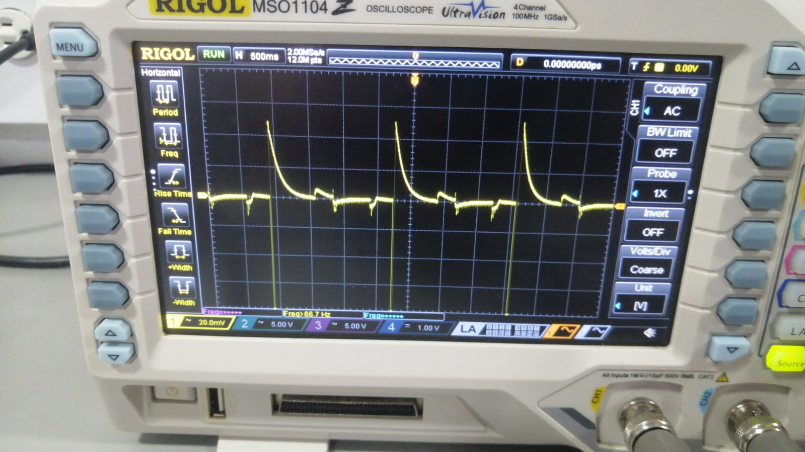
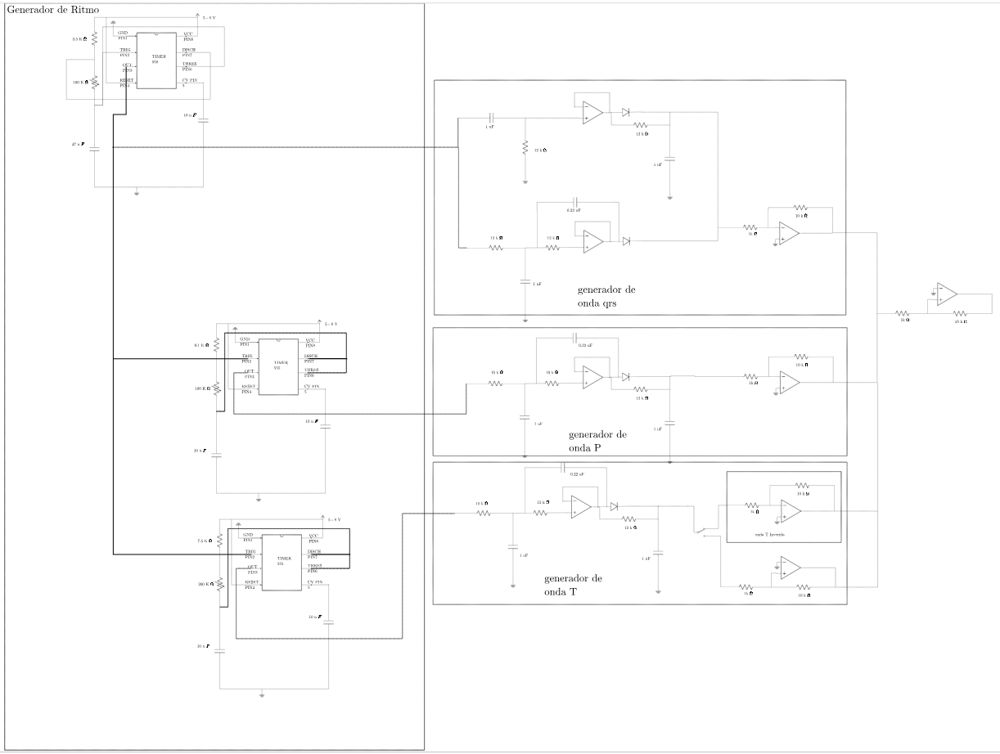
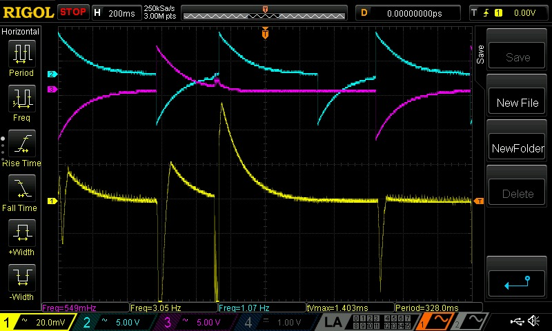
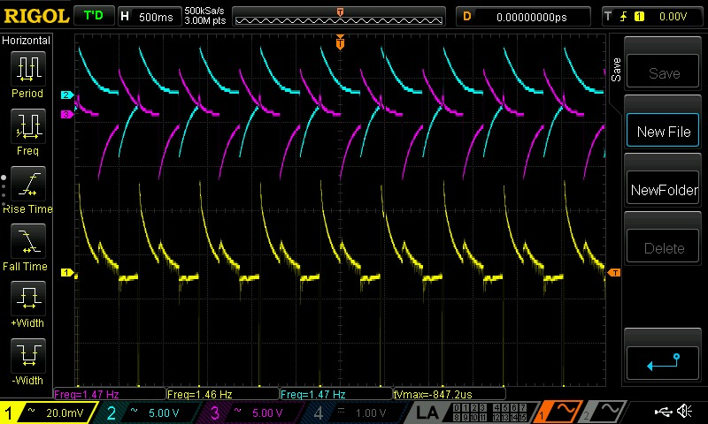

Descripción del proyecto
Objetivo del proyecto
Diseño e implementación de un sintetizador analógico de señal ECG
El objetivo central del proyecto fue diseñar, implementar y validar un prototipo funcional de sintetizador analógico de señal ECG, tomando como base un modelo conceptual previamente definido para representar las subondas P, Q, R, S y T. Se buscó generar una señal electrocardiográfica periódica, estable y ajustable, con capacidad para representar diversas anomalías cardíacas mediante el control de amplitud y temporización, garantizando además una documentación técnica completa que respaldara su operación, validación y posible fabricación profesional.
Alcance
Desarrollo integral de un generador analógico de señales biomédicas
El alcance del proyecto comprendió el diseño, integración y validación de todos los bloques funcionales necesarios para la generación de una señal ECG completa. La arquitectura incluyó una etapa generadora de ritmo encargada de establecer la frecuencia cardíaca base y sincronizar las distintas subondas que conforman el ciclo cardíaco.
Se desarrollaron conformadores independientes para la onda P, el complejo QRS y la onda T, incorporando etapas de filtrado y acondicionamiento analógico específicas para cada segmento. Asimismo, se implementaron controles de amplitud y temporización mediante elementos ajustables, permitiendo modificar parámetros clave de la señal para representar condiciones fisiológicas y patológicas.
El sistema fue complementado con un circuito sumador encargado de integrar las diferentes subondas en una única señal ECG de salida. Finalmente, se generó la documentación técnica correspondiente, incluyendo esquemáticos, diseño de PCB, lista de materiales y un manual básico de operación.
Metodología de trabajo
Validación progresiva e integración por bloques
Como líder del equipo, coordiné todas las etapas del proyecto, desde la definición de la arquitectura hasta la validación experimental en laboratorio. La estrategia de desarrollo se basó en una metodología de verificación progresiva, donde cada bloque funcional fue evaluado individualmente antes de integrarse al sistema completo.

Inicialmente se verificó la correcta generación de la onda ECG normal, validando la secuencia completa de las subondas P-QRS-T y comprobando la estabilidad de la frecuencia cardíaca base. Una vez alcanzado este objetivo, se procedió a implementar y evaluar las anomalías cardíacas previstas, verificando el correcto funcionamiento de todos los modos de operación.

La dinámica de trabajo se sustentó en la especialización por bloques y en sesiones periódicas de integración, donde cada avance era contrastado con la base de tiempo común. Esta metodología permitió identificar rápidamente posibles problemas de sincronización y garantizar un comportamiento coherente de todo el sintetizador.
Documentación del proceso
Evolución del diseño y optimización funcional
El desarrollo fue documentado de forma estructurada desde las primeras etapas del diseño conceptual hasta la validación final del prototipo. A partir del modelo preliminar se realizaron modificaciones orientadas a mejorar la estabilidad del sistema, reorganizando los bloques funcionales en etapas claramente definidas de generación de ritmo, conformación de subondas, filtrado, control de amplitud y suma de señales.
También se documentó la incorporación de mecanismos para la simulación de anomalías cardíacas mediante ajustes de amplitud y temporización, permitiendo obtener trazos correspondientes a distintas condiciones fisiológicas. Durante esta etapa se realizaron múltiples pruebas iterativas para validar la periodicidad, morfología y estabilidad de las señales generadas.
Entre los principales desafíos técnicos se encontró la sincronización adecuada entre el complejo QRS y las ondas P y T. Este problema fue solucionado mediante la optimización de los componentes temporizadores de la base de tiempo, logrando una secuencia estable y reproducible durante las pruebas de laboratorio.
Ver circuito completo (PDF)
Contribución personal
Liderazgo técnico y validación experimental
Mi contribución fue determinante para la coordinación integral del proyecto y la validación experimental del sistema. Diseñé la estrategia de pruebas que permitió verificar inicialmente la generación correcta de la señal ECG normal y, posteriormente, la activación controlada de las anomalías cardíacas implementadas.
Realicé personalmente las pruebas de laboratorio, supervisando la interacción entre todos los bloques funcionales y verificando la estabilidad de la señal bajo diferentes configuraciones de operación. Esta intervención directa permitió detectar tempranamente desviaciones en la morfología de la señal y corregirlas antes de avanzar hacia las etapas finales de integración.
Gracias a este proceso de validación progresiva fue posible asegurar una transición estable entre la señal normal y los diferentes modos patológicos, incrementando significativamente la confiabilidad global del sintetizador.
Soluciones implementadas
Optimización del sistema y representación de anomalías

Señal simulada con fibrilación auricular

Señal simulada con inversión de la onda T

Señal simulada con hipertrofia ventricular
Resultados
Sintetizador ECG funcional y validado experimentalmente
El resultado final fue un sintetizador analógico de ECG completamente funcional, capaz de generar de forma periódica una señal electrocardiográfica compuesta por las subondas P, QRS y T claramente diferenciadas. Las pruebas realizadas con instrumentación de laboratorio confirmaron la estabilidad de la frecuencia cardíaca base y la correcta respuesta de los controles de temporización implementados.
Las formas de onda registradas mediante osciloscopio mostraron una correspondencia satisfactoria con el modelo teórico propuesto, tanto en condiciones normales como en las anomalías cardíacas simuladas. Asimismo, la calibración adecuada de los controles permitió mantener una elevada reproducibilidad de la señal durante sesiones prolongadas de prueba.
El análisis crítico evidenció que las anomalías asociadas a variaciones extremas en la duración de la onda T podían experimentar ligeras atenuaciones debido al filtrado analógico. Sin embargo, estos efectos fueron compensados mediante ajustes en la etapa sumadora, logrando preservar la fidelidad de la señal final.
Como resultado tangible, se obtuvo un sistema documentado y listo para reproducción, acompañado de esquemáticos, capturas de osciloscopio comparativas, diseño PCB y documentación técnica completa. El prototipo constituye una plataforma útil para aplicaciones educativas, calibración de equipos biomédicos y futuros desarrollos en instrumentación biomédica.
Contenido desarrollado
Como se puede observar en la imagen, la señal ECG se compone de varias ondas características (P, QRS, T) que representan la actividad eléctrica del corazón. En este proyecto, se diseñó un circuito analógico utilizando amplificadores operacionales (LM358) y filtros activos para generar formas de onda que simulan tanto ritmos cardíacos normales como patologías específicas.
Entre los principales desafíos técnicos se encontró la sincronización adecuada entre el complejo QRS y las ondas P.